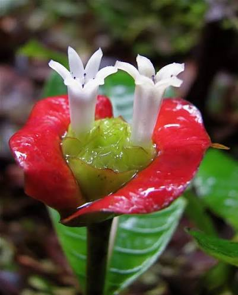
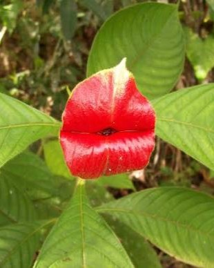

Questa pianta originaria dell'America Centrale e del Sud ha suscitato la curiosità dell'essere umano per via della particolare tecnica di sopravvivenza adottata. Il "fiore" che vedete qui sopra è in realtà composto da foglie dal colore rosso cangiante, che attirano insetti impollinatori e colibrì. Le foglie, per la precisione brattee che si aprono quando i fiori al loro interno iniziano a svilupparsi, costituiscono quindi effettivamente una sorta di tecnica di seduzione della pianta, che grazie ad esse ha più probabilità di riprodursi. Potrete trovare questa specie nelle foreste pluviali tropicali, ma sempre meno a causa della deforestazione incontrollata che si verifica in quelle zone: la specie è a rischio di estinzione. Nonostante la situazione critica continuerà a sfoggiare il suo rossetto migliore, che ha portato molti a soprannominarla "Hot kiss plant" o in altri modi vagamente scurrili. Dovremmo tutti imparare da lei, non si lascia influenzare dal giudizio altrui.

